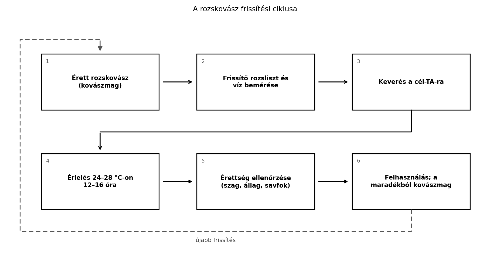

A pékségben a kuglóf rendelésre készül. Ha a pék az összes anyagot egyszerre dagasztja be, a termék illata és íze lapos marad, a héj hamar puhul, a bélzet másnap már száraz. A rozskenyérnél a frissen dagasztott tészta nyúlós, ragacsos, a kész kenyér alacsony, tömör, savanykás íz nélkül. A megoldás a legtöbb esetben ugyanaz: a liszt egy részéből előzetesen érlelt előtésztát vagy savanyú kovászt készítünk. Ebben az alfejezetben a péksüteményekhez használt kovászokat, a kevert kuglóf kovászát és a rozskovász gyakorlatát dolgozzuk fel.
A fogalmakat és a számításokat a Kovászszámítások és a kovász dokumentálása alfejezet alapján használjuk: a kovásznagyság, a tésztakitermelés (TA), a kovászmag és a frissítés ott bemutatott logikáját itt alkalmazzuk.
A rozskovászt nem „egyszer elkészítjük, aztán elfogy”, hanem ciklikusan vezetjük: mindig meghagyunk egy adag érett kovászt magként, és friss liszttel, vízzel felszaporítjuk. Az ábra ezt a kört mutatja.

A ciklus a 6. lépésből tér vissza az elejére: a felhasznált kovász maradéka lesz a következő frissítés kovászmagja. A döntés az 5. lépésnél születik: ha a kovász még nem érett (gyenge illat, lapos felület, alacsony savfok), nem visszük tovább, hanem az érlelést (4. lépés) hosszabbítjuk meg, és újra ellenőrizzük; ha túlérett, a következő frissítésnél rövidebb érlelési időt vagy alacsonyabb hőmérsékletet választunk.
Az ilyen kör akkor biztonságos, ha a kovászmagot mindig az érett, egészséges kovászból vesszük el, és a frissítési arányt, hőmérsékletet, időt pontosan betartjuk. A túl hosszú éheztetés, a túl magas hőmérséklet vagy a szennyezett eszköz a kovászt elrontja.
Definíció. A péksütemény-kovász a péksütemények, kalácsok és kevert kuglófok gyártásához használt előtészta, amelyben a tésztához szükséges liszt egy részét a folyadék (víz vagy tej) és az élesztő egy részével előzetesen összedolgozzák, majd meghatározott ideig érlelik, mielőtt a többi nyersanyagot hozzáadnák.
A péksütemény-kovász nem savanyú kovász. Célja az aroma, a tészta nyújthatósága és a jobb gázmegtartás. Az előtészta alatt a liszt sikérje megduzzad, az élesztő elszaporodik, és enyhe tejsavas, alkoholos, észteres illatanyagok képződnek. A késztermék héja színesebb, a bélzet puhább, és a termék lassabban szárad.
A hazai péksütemény-kovász gyakran édes, tejes, vajas előtészta. A külföldi szakirodalomban ismert típusok közül a poolish (híg, lengyel típusú) és a biga (kemény, olasz típusú) a legismertebb. A mai hazai üzemi gyakorlatban e neveket is használják, de a termék jellegét a hazai technológiai lapok és az Élelmiszerkönyv szerinti megnevezések határozzák meg (ellenőrizendő: az adott termékleírás).
Összefoglaló táblázat – két gyakori előtészta (tanulási példa).
| Jellemző | Poolish-típusú | Biga-típusú |
|---|---|---|
| Állag | híg, folyós | kemény, morzsalékos |
| TA (lisztre vetített) | kb. 200 | kb. 145–155 |
| Liszt : víz | 1 : 1 | 1 : 0,45–0,55 |
| Élesztő a lisztre vetítve | 0,2–0,5 m/m% | 0,2–0,5 m/m% |
| Érlelés | 12–24 óra, 18–22 °C | 12–24 óra, 15–20 °C |
Ezek az értékek termék- és lisztfüggők, ezért tanulási példának tekintendők (ellenőrizendő: üzemi technológiai lap, gyártói adatlap).
Szabály. A péksütemény-kovász lisztaránya általában a tésztához felhasznált összes liszt 20–40%-a. A kovász TA-ját a folyadék mennyiségével állítjuk be: hígabb előtészta (TA 180–200) gyorsabban érik, és jobban terül; keményebb (TA 150–160) lassabban, de intenzívebb aromát ad. Az élesztőt a kovászlisztre vetítve adjuk meg, nem a teljes receptúra lisztjére.
Példa – kevert kuglóf kovászának
anyagszámítása.
A kuglóftésztához 10,0 kg lisztet használunk fel. A kovászba a liszt
30%-a kerül, a kovász TA-ja 160, az élesztő adagja a kovászlisztre
vetítve 3,0%. Mennyi liszt, tej és élesztő kell a kovászhoz?
Adott: teljes liszt , kovászarány , , élesztő .
Keresett: a kovászliszt, a kovász tömege, a tej és az élesztő tömege.
Megoldás lépésenként:
A kovász tömege a TA-ból:
Az élesztő tömege a kovászlisztre vetítve:
A tej tömege a kovász tömegéből a liszt és az élesztő levonásával:
Ellenőrzés: , egyezik a kovász tömegével. A tejet tömegre mérjük; ha literben kellene, a tej sűrűségével (kb. ) számolunk, de a receptúrában a tömeg a megbízható. ∎
A kevert kuglóf hagyományos magyar finom pékáru. A kevert kuglóf tésztája lágy, kevert (keveréssel készülő) tészta; a kerettanterv kovásszal készült változatát tárgyaljuk (ellenőrizendő: a termékleírás és az elnevezés eredete). A kevert kuglóf kovásza a péksütemény-kovászok családjába tartozik: édes, tejes, vajas, közepesen lágy előtészta.
Szabály. A kevert kuglóf kovászát a tésztához szükséges liszt 20–35%-ából, tejjel, kevés cukorral és a kovászlisztre vetített 2–4% élesztővel készítjük. A sót a kovászba ne tegyük, mert a só gátolja az élesztő működését. A vajat is a kovász érlelése után, a dagasztásnál adjuk a tésztához, mert a sok zsiradék már az előtésztában gyengítené a sikérhálót.
Dúsított (tejes, cukros) előtésztánál a TA-t a gyakorlatban a teljes kovásztömegből számolják (kovásztömeg / kovászliszt · 100); ez eltér a víz alapú TA-tól (ellenőrizendő: hazai szakkönyvi szokás): a tej kb. 87–88% víz, ezért az itt 160-as tömegalapú TA víz alapon kb. 150. A kovász (tömegalapú) TA-ja jellemzően 155–170, az érlelési idő 2–4 óra 26–30 °C-on, a kívánt érettségtől függően. Az érett kovász illata enyhén alkoholos, gyümölcsös, állaga megemelkedett, habos, és a felületén apró buborékok látszanak.
Recept – Kevert kuglófhoz való édes tejes péksütemény-kovász (tanulási példa, 5,0 kg kuglóflisztre).
Higiénia. A tejes kovász fehérjében gazdag, ezért a munkaterületet és az eszközöket alaposan el kell mosni, különben a maradék tej gyorsan romlik. A kovász érlelése alatt takarjuk le, hogy ne szennyeződjön, és ne bőrösödjön a felülete.
Allergén. A kevert kuglóf kovásza glutént tartalmazó búzalisztből és tejből készül, ezért a kovászt tejallergénként kell kezelni. Ha a pékségben tejmentes terméket is gyártanak, a kovászos edényzetet, kanalat, mérleget tejallergénnel jelölni kell, és a tejmentes termék gyártósorától el kell különíteni.
Definíció. A rozskovász (savanyú kovász) rozslisztből és vízből készített, tejsavbaktériumok (homo- és heterofermentatív) és élesztők (vad- vagy hozzáadott) által erjesztett előtészta. A rozskovász savanyú közegét a tejsav- és ecetsav adja, pH-ja jellemzően 3,8–4,2 tanulási példa szerint (ellenőrizendő: az üzemi technológiai lap).
A rozsliszt különösen igényli a kovászolást. A rozs sikérje gyenge, a rozslisztben több a nyálkaanyag (pentozán) és az amiláz enzim. Ha a rozstésztát csak élesztővel dolgoznánk be, a tészta ragacsos lenne, a kenyér alacsony, tömör, és a bélzet gyorsan szárad. A kovászolás savassága:
A rozskovászt lehet spontán módon indítani, amikor a levegőből és a lisztből származó mikroorganizmusok szaporodnak fel, vagy starterkultúrával, amikor ismert tejsavbaktérium- és élesztőtörzset adunk az első keveréshez. A spontán indítás lassabb és bizonytalanabb, ezért a tanuló pékségben kezdőként először jól vezetett, egészséges kovászból vegyen magot, vagy starterkultúrát használjon.
A rozskovász vezetésének jellemző paraméterei (tanulási példa).
| Paraméter | Jellemző érték |
|---|---|
| TA | 150–200 |
| Kovásznagyság a tésztában | a teljes rozsliszt 30–60%-a |
| Érlelési hőmérséklet | 24–28 °C |
| Érlelési idő | 12–16 óra |
| pH érett állapotban | 3,8–4,2 (ellenőrizendő) |
| Savfok | 10–20 (100 g mintára, 1 mol/l NaOH cm³-ben; ellenőrizendő: a laboratóriumi módszer, lásd 18.2.9) |
A számok tanulási példák. Az értékeket a liszt, a hőmérséklet és a kívánt savasság módosítja, ezért minden pékség a saját HACCP-tervében és technológiai lapján rögzíti a határértékeket (ellenőrizendő).
Továbbvitt eredmény. A rozskovász itt tanult vezetési logikáját és paramétereit használjuk a Rozsos kenyér és rozskenyér alfejezetben, ahol a rozskenyér tésztájához keverjük a savanyú kovászt. A savasság, a ragacsosság és az amilázgátlás ott a készkenyér minőségén mérhető. A péksütemény-kovász fogalmát pedig a Kuglófok és a kovásszal készült kevert kuglóf alfejezet viszi tovább.
Cél: egészséges, érett rozskovász készítése és fenntartása rozskenyérhez vagy rozsos kenyérhez.
Eszközök és anyagok: rozsliszt (pl. RL 90, ellenőrizendő a jelölés), 26–30 °C-os ivóvíz, mérleg, hőmérő, keverőtál vagy keverőgép, kovászos vödör fedővel, savfokmérő vagy pH-mérő (ha van), kovásznapló.
Higiénia. A rozskovászhoz csak tiszta, élelmiszeriparban használható edényt és eszközt használjunk. A kovászos vödröt minden kiürítés után alaposan mossuk, fertőtlenítsük, és hagyjuk megszáradni. A kovász felületén a beszáradt kéreg penészedhet, ezért a vödröt le kell fedni, de ne légmentesen, mert a kovász szén-dioxidot termel. A kovászhoz ne használjunk romlott, dohos lisztet.
Gépbiztonság. Ha a kovászt keverőgéppel dolgozzuk be, a gépet csak betanítás után, felügyelettel kezeljük. A keverőtálba csak leállított, áramtalanított gép mellett nyúljunk tisztítás vagy ellenőrzés céljából. A dagasztókar forgása közben tilos a tálba nyúlni; ellenőrizzük a védőrács és a reteszelés állapotát.
Lépések (első indítás starterkultúrával vagy kovászmaggal).
Ellenőrzési pontok. A kovász hőmérséklete a keverés után 26–28 °C; az érlelés alatt a környezet ne legyen huzatos, ne hűljön le; a kovász felülete ne száradjon ki, ne képződjön kemény kéreg; a szag nem lehet rothadt, szúrósan ecetes vagy penészes (az enyhén ecetes, savanykás illat a rozskovásznál megfelelő).
Dokumentálás. A kovásznapló a minőségbiztosítás része. A savfok vagy pH mérési eredményeket, a frissítési arányt és az eltéréseket is rögzítsük. A rozskovász érlelése jellemzően minőségi ellenőrző pont (OPRP/minőségi CP): a túl magas pH vagy a túl lassú savanyodás a kenyér romlásához, eltarthatósági hibához vezethet; hogy CCP-e, azt a pékség HACCP-terve dönti el (ellenőrizendő: a pékség HACCP-terve).
Termék: Érett rozskovász (savanyú kovász), termékcsoport: előtészta, tételnagyság: 10,0 kg összes rozsliszt.
Receptúra-táblázat (tanulási példa).
| Nyersanyag | Lisztre vetített % | Mennyiség (kg) | Megjegyzés |
|---|---|---|---|
| Rozsliszt (teljes) | 100% | 10,00 | ebből 1,67 kg a kovászmagban, 8,33 kg frissítő |
| Víz (teljes) | 80% | 8,00 | ebből 0,83 kg a kovászmagban, 7,17 kg frissítő; 28 °C |
| Kovász összesen | TA 180 | 18,00 |
A táblázat a kovászmagot a teljes liszt és víz részeként tünteti fel. A kovászmag 2,50 kg érett kovász, TA 150, így benne 1,67 kg rozsliszt és 0,83 kg víz van.
Műveleti paraméterek. Keverés kézzel vagy lassú fokozatú keverőgépen; célhőmérséklet 26–28 °C; érlelés 24–28 °C-on, 12–16 óra; pH 3,8–4,2 (ellenőrizendő); savfok 10–20 (100 g, 1 mol/l NaOH) (ellenőrizendő). A frissítési arány: a kovászmag teljes tömege a friss lisztre vetítve 20–30 m/m%; a kovászmag lisztarányát a kovászlisztre vetítve (Kovászszámítások és a kovász dokumentálása szerint) ebből külön kell számolni.
Allergének. Glutént tartalmazó rozsliszt. A rozskovászt a gluténmentes termékektől elkülönítetten kell kezelni. A kovász savanyú illata nem jelenti a glutén lebomlását; a gluténfehérjék továbbra is allergének.
HACCP- és minőségi pontok.
1. példa – Rozskovász frissítése.
Van 2,50 kg érett rozskovászunk, TA 150. Frissítés után 10,0 kg összes
rozslisztet tartalmazó, TA 180-as kovászt szeretnénk. Mennyi rozslisztet
és vizet mérjünk be?
Adott: , , , .
Keresett: frissítő liszt és víz.
A TA 150 azt jelenti, hogy a kovászmagban a liszt és víz aránya 100 : 50, tehát a liszt a kovászmag tömegének része, a víz része.
A frissítő liszt:
A célként megadott TA 180-ból a teljes víz:
A frissítő víz:
Ellenőrzés: a frissített kovász tömege ; a TA . A frissítési arány (a kovászmag teljes tömege a friss lisztre): , ami a tanulási példa szerinti tartományban van; a Kovászszámítások és a kovász dokumentálása szerinti magarány (a magliszt a kovászlisztre) ugyanitt . ∎
2. példa – Péksütemény-kovász TA-jának
beállítása.
Egy kalácstésztához 6,0 kg lisztből 1,8 kg lisztet teszünk a kovászba. A
kovász tömege 2,88 kg. Mekkora a kovász TA-ja?
Adott: , .
Keresett: .
A kovász tömegalapú TA-ja 160, azaz 100 kg liszthez összesen 60 kg folyadék és egyéb anyag (élesztő, cukor) tartozik; a könyv víz alapú TA-jától ez dúsított előtésztánál eltér. ∎
3. példa – Ellenőrző számítás hibakereséshez.
Egy tanuló a rozskovászhoz 3,0 kg rozslisztet és 3,0 kg vizet mér be, és
TA 150-et ír a naplóba. Helyes-e?
Számítás: . A beírt TA 150, tehát hiba. A naplóban a TA 200 lenne; ha valóban 150-et szeretnénk, a víz legyen. ∎
Egy kis pékségben a rozskenyér hétfőnként rendszeresen lapos, ragacsos bélzetű volt, pedig a receptúra nem változott. A pék a kovászt pénteken készítette el, de a hétvégi leállás miatt a kovászmagot nem frissítette. Hétfőn a kovász erősen ecetes illatú, túl savanyú volt, ezért a tészta ragadt, a kenyér alacsony lett. A megoldás az volt, hogy a kovásznaplóban rögzítették a frissítés időpontját, és hétfőre előző este újra frissítettek. A kenyér visszanyerte a tömör, de rugalmas bélzetet és a savanykás ízt. A tanulság: a rozskovász nem tartósítószer, élő rendszer, amelynek a vezetése időhöz és pontossághoz kötött.
Az érett rozskovász minőségi jellemzői:
A kovász nem megfelelő, ha pH 4,5 felett van, savfoka túl alacsony, vagy szaga szúrós, csípős, erősen ecetes vagy penészes (az enyhén ecetes, savanykás illat megfelelő). Az ilyen kovászt ne dolgozzuk be, mert a termék hibás lesz.
1. feladat (A) Határozd meg a péksütemény-kovász fogalmát, és sorold fel három hatását a késztermékre.
2. feladat (A) Egy kevert kuglóf kovászához 2,0 kg lisztet használunk, a kovász TA-ja 165, az élesztő 4% a kovászlisztre. Számítsd ki a kovász tömegét, az élesztő tömegét és a tej tömegét.
3. feladat (B) Egy rozskovászmag 1,80 kg, TA 155. Frissítéssel 6,0 kg összes rozslisztet tartalmazó, TA 175-as kovászt készítünk. Számítsd ki a frissítő liszt és víz tömegét.
4. feladat (B) Készíts technológiai sorrendet a rozskovász vezetésére: kovászmag, frissítő liszt, víz, keverés, érlelés, ellenőrzés, felhasználás. Jelöld a HACCP szempontjából kritikus lépést és a monitoring módját.
5. feladat (C) Egy pékségben a kuglóf rendszeresen alacsony, a bélzet tömör, a kovász érési ideje viszont megfelelő. Milyen hibát keresnél a kovász anyagaiban, hőmérsékletében és a dagasztás sorrendjében? Indokold, miért.
6. feladat (D) A gyakorlati útmutató szerint indíts rozskovászt 1,0 kg rozslisztből, 0,8 kg vízből és a gyártó szerinti starterkultúrából (vagy 0,25–0,30 kg érett kovászmagból), 28 °C-on. Írd le a naplóbejegyzést: dátum, idő, anyagok, TA, hőmérséklet, tervezett érlelési idő. Milyen érettségi jeleket vársz?
Önellenőrzés – válaszok
Feladatok megoldása
1. feladat (A) A péksütemény-kovász a péksütemények, kalácsok, kevert kuglófok gyártásához használt előtészta, amelyben a tésztához szükséges liszt egy részét, folyadékot és élesztőt előzetesen érlelik. Hatásai: (1) aroma- és ízkialakítás, (2) jobb gázmegtartás, nagyobb térfogat, (3) lassabb öregedés, hosszabb frissesség.
2. feladat (A) Kovászliszt: 2,0 kg; TA = 165, ezért . Élesztő: . Tej: . Ellenőrzés: . ∎
3. feladat (B) A régi kovászmag TA 155, tehát a
liszt aránya
,
a víz aránya
.
Liszt a magban:
;
víz a magban:
.
Cél: összes liszt 6,0 kg, tehát frissítő liszt:
.
Cél TA 175, tehát teljes víz:
.
Frissítő víz:
.
Ellenőrzés: kovász tömeg
;
TA
.
∎
4. feladat (B) Sorrend: (1) kovászmag kivétele az érett kovászból, (2) frissítő liszt és víz bemérése, (3) keverés, (4) érlelés 24–28 °C-on, (5) érettség ellenőrzése (szag, állag, pH/savfok), (6) felhasználás vagy újabb frissítés. Kritikus lépés az érlelés, mert a hőmérséklet és az idő hibája a savasságot és a mikrobiális biztonságot rontja. Monitoring: hőmérséklet, idő, pH/savfok mérése, naplózás.
5. feladat (C) Hiba lehet a kovász túl magas vagy túl alacsony hőmérséklete (pl. 35 °C felett túl gyors, 20 °C alatt túl lassú érés), a kovászliszt aránya túl alacsony, az élesztő öreg, vagy a sót már a kovászba keverték. A dagasztási sorrendnél az is gond, ha a kovászt nem a folyadékkal együtt adják a liszthez, hanem a már kialakult tésztához utólag, így nem oszlik el egyenletesen. A hibát a kovásznapló, a hőmérséklet-ellenőrzés és az anyagbemérés visszakövetése tárja fel.
6. feladat (D) Naplóbejegyzés például: „Dátum: …, idő: 06:00. Rozskovász indítás: 1,0 kg rozsliszt + 0,8 kg víz + starterkultúra/érett kovászmag (28 °C). TA = 180 (a starter nélkül). Keverés csomómentesre. Érlelés 28 °C-on, tervezett 14 óra. Érettségi jelek vártak: térfogatnövekedés, domború felület, savanykás illat, pH 4,0 körül.” Az érettséget másnap ellenőrizzük.
A péksütemény-kovász a péksütemények, kalácsok és kevert kuglófok előtésztája, amely a liszt egy részét, folyadékot és élesztőt előzetesen érlel, így aromát, jobb gázmegtartást és hosszabb frissességet ad. A poolish híg (TA kb. 200), a biga kemény (TA kb. 150), a hazai kevert kuglóf kovásza pedig édes, tejes, vajas előtészta. A rozskovász savanyú kovász, amelyet rozslisztből és vízből vezetnek, és a tejsavbaktériumok (homo- és heterofermentatív) és élesztők savanyítják. A rozskovász pH-ja 3,8–4,2 (tanulási példa, ellenőrizendő), TA-ja 150–200 között lehet. A kovász dokumentálása a kovásznaplóban történik: dátum, anyagok, TA, hőmérséklet, idő, savfok/pH és érettségi jelek. Továbbvitt eredmény: ezeket az előtésztákat az A dagasztás célja és a tészta kialakulása, a Rozsos kenyér és rozskenyér és a Kuglófok és a kovásszal készült kevert kuglóf alfejezetekben használjuk fel.